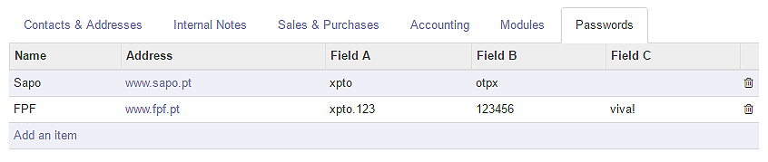
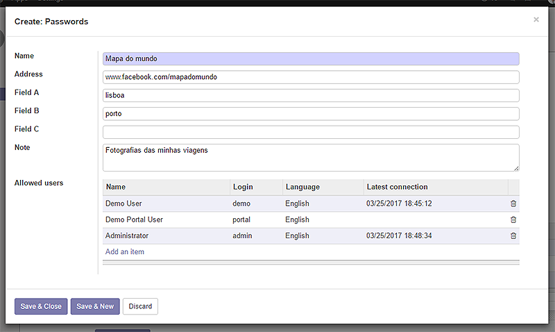
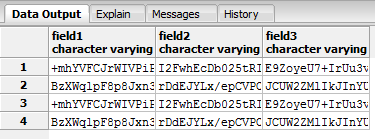

Quite often you find yourself needing to keep track of logins and passwords related to your customers' (or suppliers') websites. You don't want to write things down in some piece of paper that can be read by anyone and neither do you like the idea of using a simple text file to save this sensitive information.
The usual solution is to download some software from the net and fully trust it, unaware of any possible misuse of your invaluable data.
"Password Management (for partners)" is the solution for your problem because it keeps data within your Odoo setup and it's code can be revised and changed by any trusted developer.

In every partner's form, there's a 'Passwords' tab where you can add as many lines as you want.

This module creates two user groups: 'user' and 'manager'.
'Users' are able to see/edit the passwords they created and they can also see the ones they've been associated to by the 'manager'.
The 'manager' profile has all permissions on any existing password record.

Data is saved in an encrypted way that is dependent on a key defined in Odoo system parameters.
You can change the encryption key anytime.
Before installing this module, make sure you have Python's PyCryptodome library installed and its AES feature working properly.
PyCryptodome can be obtained here (for free): https://pycryptodome.readthedocs.io